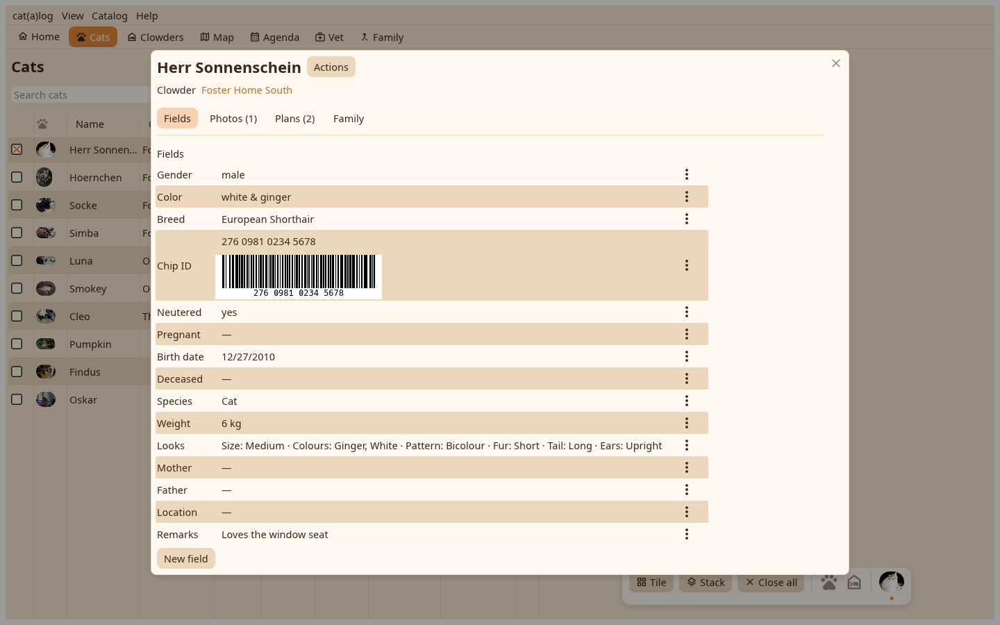

Edit opens the whole page over the desk, cut into tabs: Fields, Photos, Plans and Family for a cat; Fields, Cats and Plans for a home. The tab last used comes back.

Every field with its value and the pen that opens its editor: text as many lines as you write, a calendar for a date that can still be typed, a number or a measurement in your units, a choice, a place picked on the map or found by address, an ID, a parent picked from the cats that could be one. The date it counts from and the private mark sit apart from the value. New field makes one for the catalog.
Photos from files or a drop, the profile image, crop and mark, the viewer. Plans: the chores and appointments of this cat with their editors. Family: mother, father, littermates and kittens as derived from the fields.
Move to another home, seen here now, flier hangs here, show on map, merge into, the card, the vet report, the missing poster, hide, delete.